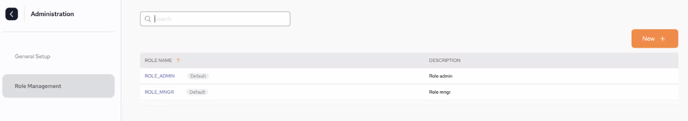
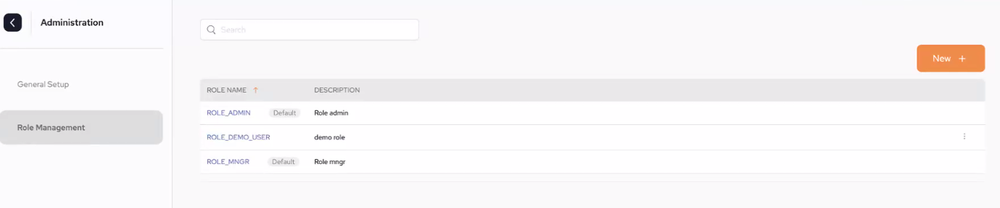

<?xml version="1.0" encoding="utf-8"?>
<html xmlns:MadCap="http://www.madcapsoftware.com/Schemas/MadCap.xsd">
    <head>
    </head>
    <body>
        <map id="map1">
            <area shape="rectangle" coords="31,228,438,655" dragDirection="0" />
            <area shape="rectangle" coords="486,228,891,656" dragDirection="0" href="gs-ops-manager-cluster-overview.html" />
            <area shape="rectangle" coords="940,227,1349,656" dragDirection="0" />
        </map>
        <h1 class="tc-pagetitle">SpaceDeck – SSO&#160;Setup Using Azure Active Directory</h1>
        <p>In order to configure your SSO using Azure Active Directory, follow these steps:</p>
        <p>Add the following Helm repositories (skip this step if they have already been added):</p><pre xml:space="preserve">helm repo add dih
https://s3.amazonaws.com/resources.gigaspaces.com/helm-charts-dih
helm repo update dih
helm repo add ingress-nginx https://kubernetes.github.io/ingress-nginx
help repo update ingress-nginx</pre>
        <p>Install Ingress:</p><pre xml:space="preserve">help upgrade --install ingress-nginx ingress-nginx/ingress-nginx -f DIH/helm/ingress-controller-tcp.yaml</pre>
        <p>Output of ingress-controller-tcp.yaml:</p><pre xml:space="preserve">tcp:
  8090: "default/xap-manager-service:8090"
  3030: "default/grafana:3030"
  3000: "default/spacedeck:3000"
  8080: "default/redpanda:8080"
  6080: "default/di-manager:6080"
  6081: "default/di-mdm:6081"
  6082: "default/di-subscription-manager:6082"
  8181: "default/flink-jobmanager:8081"
  5432: "default/xap-dgw-service:5432"
  11701: "default/iidr-kafka:11701"
  10101: "default/iidr-as:10101"
  9000: "default/xap-security-service:9000"
</pre>
        <p>Install the DIH Kubernetes Umbrella:</p><pre xml:space="preserve">helm install dih dih/dih --version <MadCap:variable name="Versions.helm-version-MX" /> --set tags.iidr=false -f dih-umbrella.yaml</pre>
        <p>Output of dih-umbrella-yaml.</p>
        <h1>Access the Administration Screen</h1>
        <p>If a user is defined as an Admin, the Administration options can be accessed via the cog at the bottom left hand corner.</p>
        <p>
            <div class="tc-admon-attention">
                <p>In order to create, delete or update Connection (Identify Provider) or Roles Management settings, the user should be assigned the appropriate role. These are specified below.<br />An explanation of all the available permissions can be found on the <a href="../started/xap-tutorial-part10.html">Role-Based Security</a> page.</p>
            </div>
        </p>
        <p>
            
        </p>
        <p id="YES-TOC">.</p>
        <h1>General&#160;Setup </h1>
        <p>Populate the Connection fields in order to configure SSO. Once they are populated, click <b>Apply</b>.</p>
        <div class="tc-admon-attention">
            <p>In order to be able to configure the <b>Connection (Identify Provider)</b>fields the user has to be assigned the specific permission of <b>Manager Identify Providers</b>, otherwise an error 403 (Forbidden) response will be displayed. <br />An explanation of all the available permissions can be found on the <a href="../started/xap-tutorial-part10.html">Role-Based Security</a> page.</p>
        </div>
        <p>
            
        </p>
        <h2>Connection Fields</h2>
        <ul>
            <li>
                <p><b>Provider type</b> – The protocol the IDP supports. Currently <MadCap:variable name="General.ProductNameIE" /> supports OpenID.</p>
            </li>
            <li>
                <p><b>Provider id</b> – This is a generic ID that will be used as a name for the auth-config creator.</p>
            </li>
            <li>
                <p><b>Redirect URIs</b> – Upon successful sign-in, this endpoing in our server will receive the data from the IDP,</p>
            </li>
            <li>
                <p><b>Issue&#160;URL</b> – URL&#160;of the IDP&#160;issuer. &#160;For example, Okta, JumpCloud, AWS, Github.</p>
            </li>
            <li>
                <p><b>Client Id</b> – Unlike the Provider ID, this ID serves as a unique identifier which the IDP generates to the user so they can identify with it,</p>
            </li>
            <li>
                <p><b>Client Secret</b> – This is a secret key that is used with the Client ID in order to improve security.</p>
            </li>
            <li>
                <p><b>Authorization Grant Type</b> – Each IDP has rules regarding how roles are grouped. These rules have an arbitrary name provided by the IDP. The roles user must use this name to create the roles.</p>
            </li>
        </ul>
        <p>Once the connection details are entered, click <b>Apply</b>. </p>
        <h1>Roles Management</h1>
        <p>Each role that is configured will have certain roles assigned to it.</p>
        <p>Before the service-grid launch, the roles should be configured by the company IT&#160;manager in the config map of the Kubernetes environment</p>
        <p>If there is no configuration in the config map (this is <b>not</b> recommended), there are two default roles that are included with the installation which cannot be edited: ROLE_ADMIN and ROLE_MNGR.</p>
        <p>To see which roles are applied to each role, click the role name: </p>
        <p> </p>
        <p>Create a new role by clicking  <b>New +</b> to access the role setup page.</p>
        <div class="tc-admon-attention">
            <p>In order to create, delete or update the <b>Roles Management</b> settings, the user has to be assigned the specific permission of <b>Manage Roles</b>, otherwise an error 403 (Forbidden) response will be displayed. <br />An explanation of all the available permissions can be found on the <a href="../started/xap-tutorial-part10.html">Role-Based Security</a> page.</p>
        </div>
        <p>On the setup page:</p>
        <ol>
            <li>
                <p>Provide a name for the new role. In our example it is ROLE_DEMO_USER.</p>
            </li>
            <li>
                <p>Provide a description of the role.</p>
            </li>
            <li>
                <p>Select which permissions the role should have by selecting from the list and using the right-arrow to move the role into the list on the right.</p>
            </li>
            <li>
                <p>An explanation of all the available permissions can be found on the <a href="../started/xap-tutorial-part10.html">Role-Based Security</a> page.</p>
            </li>
            <li>
                <p>Click <b>Apply</b></p>
            </li>
        </ol>
        <p>
            
        </p>
        <p>&#160;</p>
        <p>Once apply is click the following screen is displayed, where you can see the new role has now been added.</p>
        <p>
            
        </p>
    </body>
</html>